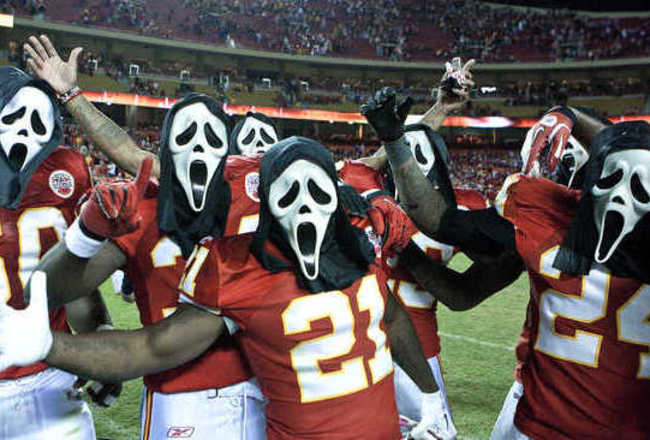
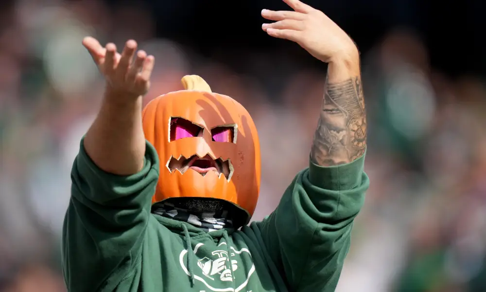
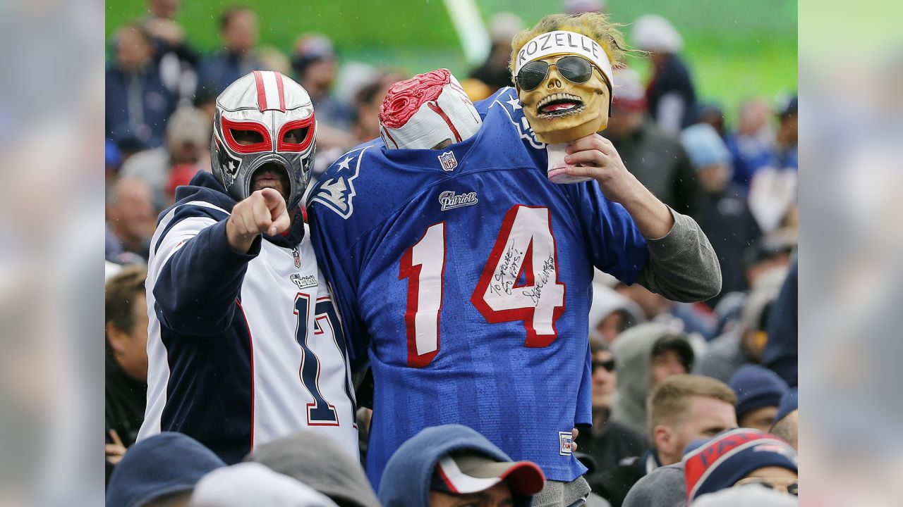
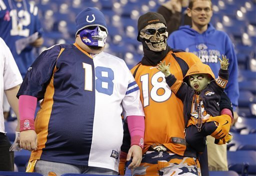
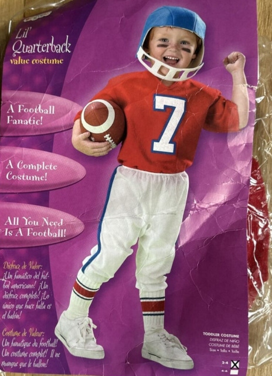
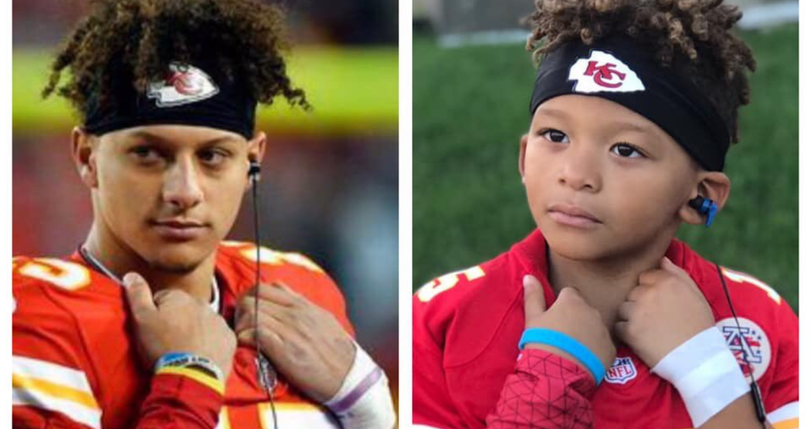
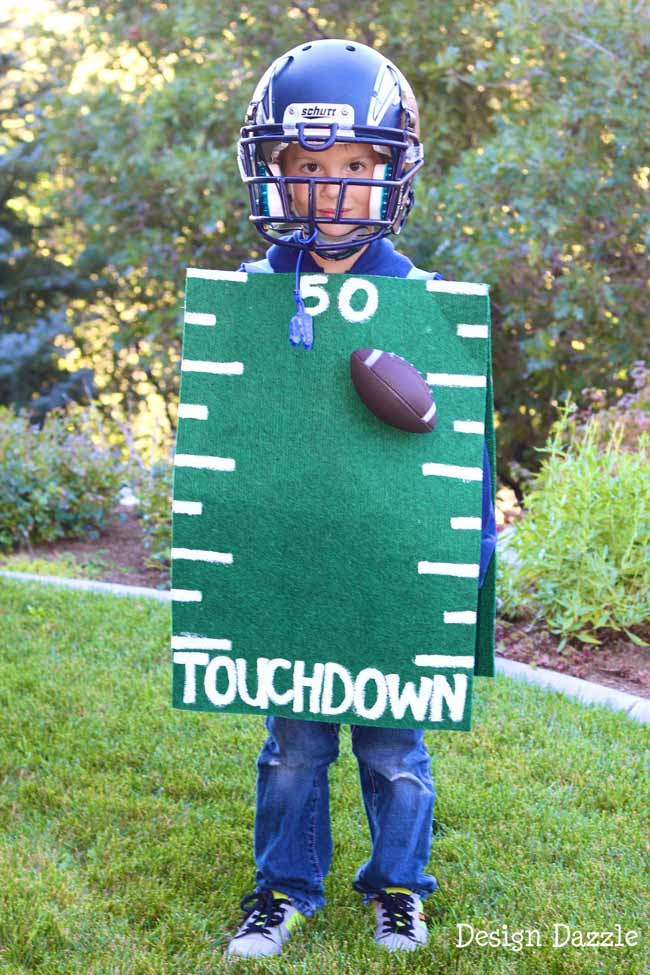

What a strange week to look at the standings, with six teams at 3-4. The rankings seem to be getting a little more concrete, but a lot could change this week!

Matchup of the Week
*️⃣ Tua Williams One Kupp (5-2) v. 8======D (6-1) *️⃣ Top two guys going at it. Wish they could both lose!
What to Watch: Can Reeetieen keep us his tear against a tough Pittsburgh D? Will Walker score against the tougher Browns D? Seif has the stronger WR set, but Waddle is due for a breakout. Could it come down to T-Law vs. the up and down, Tua?
Waiver Wire Wizard
🧙🏻♂️ Neil - $32 - Dalton Kincaid This is the second week in a row that we have a Dalton-TE here. Neil spends big but Kincaid could be a top-10 TE going forward, as shown on TNF. Also a spicy keeper if he can establish himself.
Honorable Mentions Tony - $1, $2, $0 - Bourne, Charbonnet, Akers I liked the Bourne pickup, but he’s already been swapped out for Charbonnet 🍷 Today brings out another backup RB with Akers. While neither back has standalone value right now, they are in a good position as handcuffs.
Cries for Help
😭 CJ- $10 - Dak and Nuk Chris seems to have the eye for the old guys, but this seems stretchy to me. Dak is so hard to predict. In that same vein, who will Nuk have throwing to him? He could be a security blanket, but only time will tell.
Honorable Mention Neil - $11 - Gus Bus Neil really broke the bank this week! This one could pay off… or he could be dropped next week when the Ravens do something totally unpredictable and Hill scores two TDs.
Week Eight Power Rankings

👑 8======D (6-1, W4, PF 843.86) 🔂
Waiver Budget: $46
The QB carousel keeps going around. Next up, Trevor Lawrence! The only team at 6-1, it’s hard to picture sliding out of the top four… though it might be just a little early to punch his ticket.

2. Tua Williams One Kupp (5-2, W4, PF 963.06) 🔂
Waiver Budget: $17
Kupp is human! But I doubt we’ll see two weeks in a row, though he faces a stout Dallas D. Very interesting week for Henry, too. Could the Titans change their mind on trading him if they get blown out today?
3. JA MONTG (3-4, W1, PF 937.04) ⬆️⬆️
Waiver Budget: $47
CMC health… definitely looking okay! Tony tops the league in scoring this week with help from a stellar breakout from Addison.

4. Diggin That Bijan Mustard (4-3, L1, PF 897.40) ⬇️
Waiver Budget: $44
Little slide here for CJ, but still has a scary roster. Kamara and Allen appear to be the steal of the season, perhaps outside of Puka. What can JT add, now approaching his full workload.

5. Exotic Engrams (3-4, 1L, PF 853.34) ⬇️
Waiver Budget: $42
Second-highest scorer two weeks in a row, but ran into Tony last week, unfortunately. If Aaron Jones could return to full health and workload, that’d be great!

6. Hurts Donut (3-4, 1W, PF 853.34) ⬆️⬆️⬆️
Waiver Budget: $29
Joel’s roster really stumps me. I look at it one day and love it, then another, I hate every player (besides Hurts and Puka). I hear Joel’s a big fan of the tush push (spread this rumor!)
7. Jus-Kareemn-4-Herb (3-3, 1W, PF 697.28) 🔂
Waiver Budget: $0
Andy gets to zero first! I don’t think any of us are surprised… expect trade offers for your FAAB! But for real, it’ll be fun watching him navigate the remaining weeks before the postseason.

8. Love Heem (3-4, 2L, 755.68) 🔂
Waiver Budget: $37
Slipply slide territory here for Kris. This roster may be the weakest in the league, even with Mostert being outside his mind… though has that come to an end in Miami?
9. Sweet Brotha Numpsay (3-4, 3L, PF 782.40) ⬇️⬇️⬇️
Waiver Budget: $31
This man deserves no respect after losing three straight. As the Niners go, Pangy goes. Can’t get Achane and Kyren back soon enough.
💩 Unpaid Bills (2-5, 1W, 757.60) 🔂
Waiver Budget: $12
Let’s not overreact. Neil gets a win, and I wanted to move him up, but he’s gotta prove-it week here for me. With a win, he could see a huge jump in the standings. Drake London has been excellent recently, let’s see how the Falcons fuck that up. You’d look good in the costume on the right, IMO.
Good luck to everyone besides Kris! 👶
“I’m fucking tired of this shit. … Seven fucking years of the same shit.”
- Jonathan Allen, WAS DL… or was that Neil Calvert?